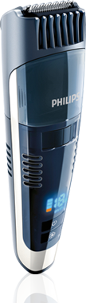
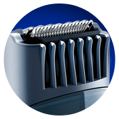

Dispensa manutenção
Suas lâminas permanecem afiadas e
dispensam lubrificação permitindo que seu
Aparador esteja sempre pronto para o uso!


Trava para viagem
Você pode colocar seu aparador dentro da mala
ou mochila sem se preocupar que ele ligue
sozinho, basta acionar a trava de segurança.